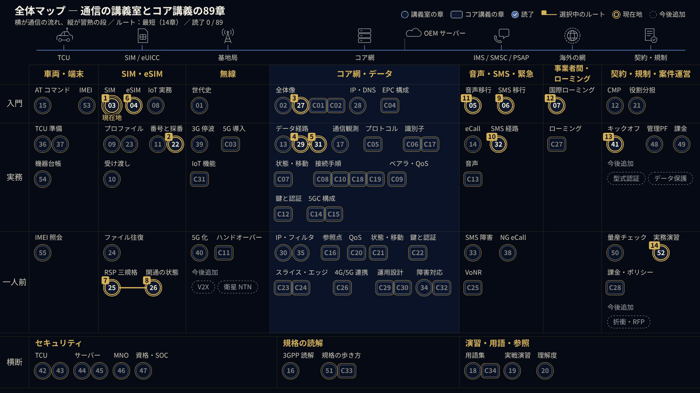

01 · AI & Dev Environment
AI・開発環境（Claude Code）
02 · Telecom
通信
Learning Map
学習全体マップ — 通信の講義室とコア講義、89章を1枚で俯瞰
通信の講義室（55章）とコアネットワーク講義（34章）を、通信の流れ（横）と習熟の段（縦）で1枚に並べました。入門から実務、一人前までの道筋を選び、いまの読了状況を地図の上で確かめられます。

通信
通信の講義室 ― eSIM・IoT 実務大全
全55章・14部の独習教材。eSIM/RSP、VoLTE・SMS、IoT/車載の実務、セキュリティ、IMEI まで。ラボ・ログ演習・理解度チェック付き。
開く通信
コアネットワーク講義 ― 4G EPC / 5G 5GC
4G EPC と 5G 5GC のコアネットワークを全34章で学ぶ独習教材。構成図、シーケンス再生、識別子の解剖、鍵階層、状態遷移、切り分け演習、確認問題付き。
開く通信
eSIM / RSP 解説ツール
リモート SIM プロビジョニング（RSP）の規格 SGP.22・SGP.02・SGP.32 を比較し、プロファイルのダウンロード手順をアニメーションで追えます。
開く通信
コネクテッドカー通信プラットフォーム資料 ― 主要事業者と業界動向
国内外の通信事業者・専業プラットフォーム・eSIM 供給者、約30社と業界の動きを、公開情報だけを出典に整理した資料。出典156件。実務者向けのチェックポイントと比較表つき。
開く03 · Semiconductor
半導体
半導体
半導体講義 ― 基礎・製造装置・装置輸送
全 32 章を公開中
全32章。半導体の物性から製造工程、製造装置、業界と供給網、装置の梱包・輸送・据付、産業政策までを扱います。図とクイズつきで、全章を公開中。公開情報だけを出典にしています。
開く04 · Compute Servers
計算サーバー
計算サーバー
計算サーバーの仕組みを扱う講義。
検証中05 · Custom PC
自作PC
自作PC
自作 PC を扱う講義。
準備中06 · Power Generation
発電・ガスタービン
発電・ガスタービン
発電事業の仕組みと、コンバインドサイクル発電用ガスタービンを扱う講義。
準備中Other
その他
Profile
プロフィール
TTJ
TED TRADING JAPAN G.K.
AI・開発環境、通信、半導体、計算サーバー、発電を、公開情報だけで学べる形にまとめています。仕組みを図とアニメーションで分かりやすく見せること、そして AI エージェントを使って、迷わず使える開発環境をつくることに取り組んでいます。
- AI・開発環境Claude Code を軸にした環境づくり
- 通信eSIM / eUICC・VoLTE / IMS・SMS・国際ローミング
- 半導体物性から製造装置・装置輸送まで（全32章）
- 計算サーバー検証中
- 自作PC準備中
- 発電・ガスタービン準備中
Repository
このリポジトリについて
ttj-ai-ecosystem は、Claude Code の環境を一括で整えるための公開リポジトリです。全ファイル日本語で、WSL2（Ubuntu）上での利用を前提にしています。
- Claude Code 設定CLAUDE.md・権限ルール（settings.json）・記憶メモを
~/.claude/に導入します。 - フック（Hooks）危険な操作をブロックし、確認が必要な操作を知らせる安全装置です。
- スキルとサブエージェント用途別のスキルと、軽い作業から判断の要る作業まで担当を分けたエージェントです。
- デザインシステム紺×金のデザイントークン（tokens.css）と見本ページです。
- BotX 下書き・ニュース要約を行う Bot と、Discord Bot（任意）を収録しています。
- Cloudflare 公開Cloudflare Pages への導入手順と GitHub Actions のワークフローです。
Skills & Stack
スキル・技術スタック
AI・開発環境
- Claude Code
- Hooks
- Skills
- サブエージェント
- モデル振り分け
- Codex 連携
- WSL2 / Ubuntu
- Python
- Bash
フロントエンド・公開
- HTML
- CSS
- JavaScript
- SVG
- デザインシステム
- GitHub Actions
- GitHub Pages
- Cloudflare Pages